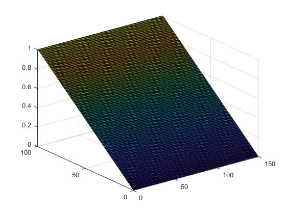
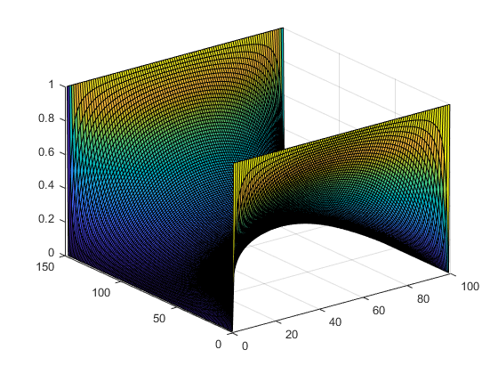
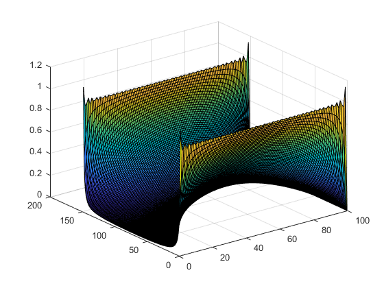
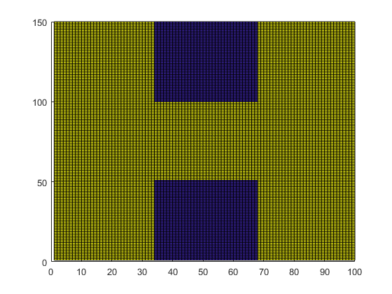
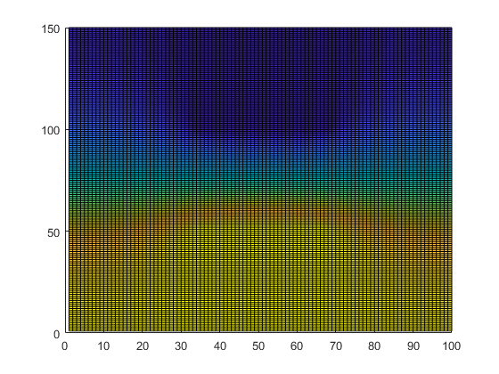
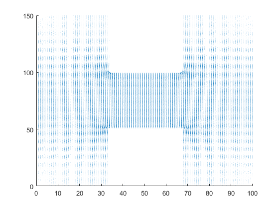
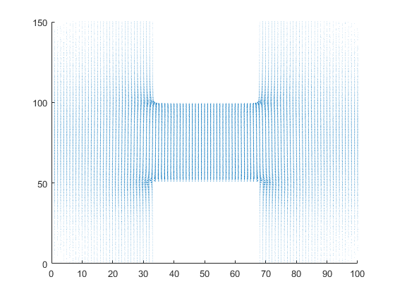
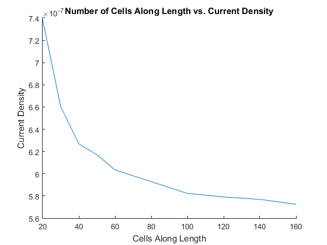
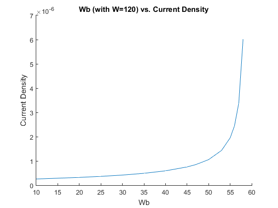
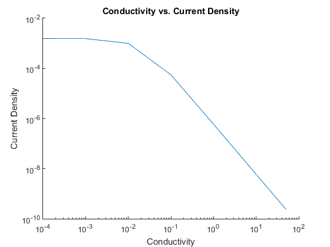

ELEC 4700 Assignment 2 - Finite Difference Method
Contents
- 1a - 1D Electrostatic Potential
- 1b - 2D Electrostatic Potential (Finite Difference Method)
- 1c - 2D Electrostatic Potential (Analytic Method)
- 1d - Discussion
- 2a - Non-Uniform Conductivity Map
- 2b - Investigating Mesh Density
- 2c - Investigating Bottle-Neck Distance
- 2d - Investigating Resistivity
- 2e - Discussion
1a - 1D Electrostatic Potential
Below is a solution to the 2D potential, but represented as a 3D surface with a constant potential in the y direction. One side of the rectangle is held at a potential of 1, the other side is held at 0, and dV/dy is set to 0 for the other two sides to allow for the flat 1D-like potential.
clearvars clearvars -GLOBAL close all L = 100; W = 3/2*L; Vo = 1; G = sparse(L*W,L*W); B = zeros(1,L*W); for i=1:L for j=1:W n = j + (i-1)*W; % indexing for G matrix if i==L G(n,:) = 0; G(n,n) = 1; B(n) = Vo; elseif i==1 G(n,:) = 0; G(n,n) = 1; elseif j==1 G(n,:) = 0; G(n,n) = -1; G(n,n+1) = 1; % dV/dy = 0 on one side of box elseif j==W G(n,:) = 0; G(n,n) = -1; G(n,n-1) = 1; % dV/dy = 0 on other side of box else G(n,:) = 0; G(n,n) = -4; G(n,n-1) = 1; G(n,n+1) = 1; G(n,n-W) = 1; G(n,n+W) = 1; end end end F=G\B'; Vmap = zeros(L,W); for i=1:L % remapping solution to 2D matrix for j=1:W n = j + (i-1)*W; Vmap(i,j) = F(n); end end surf(Vmap); pause(0.001);
1b - 2D Electrostatic Potential (Finite Difference Method)
Below is the solution to the potential system where instead of having dV/dy=0 for the last two sides, they are fixed at V=0.
clearvars clearvars -GLOBAL close all W = 100; L = 3/2*W; Vo = 1; G = sparse(L*W,L*W); B = zeros(1,L*W); for i=1:L for j=1:W n = j + (i-1)*W; if i==1 || i==L G(n,:) = 0; G(n,n) = 1; B(n) = Vo; elseif j==1 G(n,:) = 0; G(n,n) = 1; elseif j==W G(n,:) = 0; G(n,n) = 1; else G(n,:) = 0; G(n,n) = -4; G(n,n-1) = 1; G(n,n+1) = 1; G(n,n-W) = 1; G(n,n+W) = 1; end end end F=G\B'; Vmap = zeros(L,W); for i=1:L for j=1:W n = j + (i-1)*W; Vmap(i,j) = F(n); end end surf(Vmap); pause(0.001);
1c - 2D Electrostatic Potential (Analytic Method)
Below is the same potential system as before, but solved using the analytic solution provided by the lab document.
clearvars clearvars -GLOBAL close all W = 100; L = 3/2*W; Vo = 1; Terms = 60; V = zeros(L+1,W); for k=1:Terms for j=1:W for i=1:L+1 V(i,j) = V(i,j) + 4*Vo/pi*1/(2*k-1)*cosh((2*k-1)*pi*(i-L/2-1)/W)/cosh((2*k-1)*pi*(L/2)/W)*sin((2*k-1)*pi*j/W); end end surf(V); pause(0.05); end
1d - Discussion
60 terms were used for the analytic series solution method, as it was determined that using larger values of the index n resulted in an inf/inf calculation, resulting in a NaN output from Matlab. Both the analytic and finite difference methods produced approximately the same potential distributions. One of the downsides of the finite difference method is the rough edges on the corners of the map, which the analytic method seemed not to have. However, the analytic method experiences the Gibbs phenomenon due to the termination of the series solution, resulting in overshoots of the solution at the map boundaries.
2a - Non-Uniform Conductivity Map
Below is the solution to the non-uniform conductivity map potential. Plots for this code include the conductivity map defined by the lab document, voltage map determined by the solution of Laplace's equation, the electric fields determined from the negative of the gradient of the potential map, and the current density map calculated by multiplying the electric field map by the current densities corresponding to each cell.
clearvars clearvars -GLOBAL close all L = 100; W = 3/2*L; Lb = round(L/3); Wb = round(W/3); Vo = 1; maxI = 200; delta = 1; Sigma = ones(W,L); for i=1:Wb % defining high resistivity portions of map in terms of Wb and Lb for j=round(L/2-Lb/2):round(L/2+Lb/2) Sigma(i,j) = 0.01; end end for i=round(W-Wb):W for j=round(L/2-Lb/2):round(L/2+Lb/2) Sigma(i,j) = 0.01; end end figure(1) hold on surf(Sigma); title('Conductivity Map') colorbar axis([0 L 0 W]) hold off G = sparse(L*W,L*W); B = zeros(1,L*W); for i=1:W for j=1:L n = j + (i-1)*L; if i==1 && j==L/2 G(n,:) = 0; G(n,n) = 1; B(n) = Vo; elseif i==W && j==L/2 G(n,:) = 0; G(n,n) = 1; elseif j==1 && i==1 % solving Laplace using resistor method G(n,:) = 0; G(n,n) = -(1/Sigma(i+1,j) + 1/Sigma(i,j+1)); G(n,n+1) = 1/Sigma(i,j+1); G(n,n+L) = 1/Sigma(i+1,j); elseif j==L && i==1 G(n,:) = 0; G(n,n) = -(1/Sigma(i+1,j) + 1/Sigma(i,j-1)); G(n,n-1) = 1/Sigma(i,j-1); G(n,n+L) = 1/Sigma(i+1,j); elseif j==1 && i==W G(n,:) = 0; G(n,n) = -(1/Sigma(i-1,j) + 1/Sigma(i,j+1)); G(n,n+1) = 1/Sigma(i,j+1); G(n,n-L) = 1/Sigma(i-1,j); elseif j==L && i==W G(n,:) = 0; G(n,n) = -(1/Sigma(i-1,j) + 1/Sigma(i,j-1)); G(n,n-1) = 1/Sigma(i,j-1); G(n,n-L) = 1/Sigma(i-1,j); elseif j==1 G(n,:) = 0; G(n,n) = -(1/Sigma(i+1,j) + 1/Sigma(i,j+1) + ... 1/Sigma(i-1,j)); G(n,n+1) = 1/Sigma(i,j+1); G(n,n+L) = 1/Sigma(i+1,j); G(n,n-L) = 1/Sigma(i-1,j); elseif j==L G(n,:) = 0; G(n,n) = -(1/Sigma(i+1,j) + 1/Sigma(i,j-1) + ... 1/Sigma(i-1,j)); G(n,n-1) = 1/Sigma(i,j-1); G(n,n+L) = 1/Sigma(i+1,j); G(n,n-L) = 1/Sigma(i-1,j); elseif i==1 G(n,:) = 0; G(n,n) = -(1/Sigma(i+1,j) + 1/Sigma(i,j+1) + ... 1/Sigma(i,j-1)); G(n,n+1) = 1/Sigma(i,j+1); G(n,n+L) = 1/Sigma(i+1,j); G(n,n-1) = 1/Sigma(i,j-1); elseif i==W G(n,:) = 0; G(n,n) = -(1/Sigma(i,j+1) + 1/Sigma(i,j-1) + ... 1/Sigma(i-1,j)); G(n,n-1) = 1/Sigma(i,j-1); G(n,n+1) = 1/Sigma(i,j+1); G(n,n-L) = 1/Sigma(i-1,j); else G(n,:) = 0; G(n,n) = -(1/Sigma(i,j+1) + 1/Sigma(i,j-1) + ... 1/Sigma(i-1,j) + 1/Sigma(i+1,j)); G(n,n-1) = 1/Sigma(i,j-1); G(n,n+1) = 1/Sigma(i,j+1); G(n,n-L) = 1/Sigma(i-1,j); G(n,n+L) = 1/Sigma(i+1,j); end end end F=G\B'; Vmap = zeros(W,L); for i=1:W for j=1:L n = j + (i-1)*L; Vmap(i,j) = F(n); end end figure(2) hold on surf(Vmap); title('Voltage Distribution') colorbar hold off pause(0.001); [Ex,Ey]=gradient(-Vmap); % Ex=-dV/dx, Ey=-dV/dy figure(3) hold on quiver(Ex,Ey); axis([0 L 0 W]) title('Electric Field') hold off pause(0.001); Jx=Sigma.*Ex; Jy=Sigma.*Ey; Cin = sqrt(Jx(1,L/2)^2+Jy(1,L/2)^2); Cout = sqrt(Jx(W,L/2)^2+Jy(W,L/2)^2); Curr = (Cin+Cout)*0.5; % average current through isolated cells figure(4) hold on quiver(Jx,Jy); axis([0 L 0 W]) title('Current Density') hold off pause(0.001);   
2b - Investigating Mesh Density
Below is the same code as above, but run in a loop to parameterize the number of cells along the length and width of the box. At the end a plot is produced that shows the change in current density through the isolated points in the mesh as the mesh density is varied.
clearvars clearvars -GLOBAL close all Lvec = [20 30 40 50 60 80 100 120 140 160]; % various mesh lengths steps=length(Lvec); Curr = zeros(1,steps); for h=1:steps L = Lvec(h); W = 3/2*L; Lb = round(L/3); Wb = round(W/3); Vo = 1; maxI = 200; delta = 1; Sigma = ones(W,L); for i=1:Wb for j=round(L/2-Lb/2):round(L/2+Lb/2) Sigma(i,j) = 0.01; end end for i=round(W-Wb):W for j=round(L/2-Lb/2):round(L/2+Lb/2) Sigma(i,j) = 0.01; end end G = sparse(L*W,L*W); B = zeros(1,L*W); for i=1:W for j=1:L n = j + (i-1)*L; if i==1 && j==L/2 G(n,:) = 0; G(n,n) = 1; B(n) = Vo; elseif i==W && j==L/2 G(n,:) = 0; G(n,n) = 1; elseif j==1 && i==1 G(n,:) = 0; G(n,n) = -(1/Sigma(i+1,j) + 1/Sigma(i,j+1)); G(n,n+1) = 1/Sigma(i,j+1); G(n,n+L) = 1/Sigma(i+1,j); elseif j==L && i==1 G(n,:) = 0; G(n,n) = -(1/Sigma(i+1,j) + 1/Sigma(i,j-1)); G(n,n-1) = 1/Sigma(i,j-1); G(n,n+L) = 1/Sigma(i+1,j); elseif j==1 && i==W G(n,:) = 0; G(n,n) = -(1/Sigma(i-1,j) + 1/Sigma(i,j+1)); G(n,n+1) = 1/Sigma(i,j+1); G(n,n-L) = 1/Sigma(i-1,j); elseif j==L && i==W G(n,:) = 0; G(n,n) = -(1/Sigma(i-1,j) + 1/Sigma(i,j-1)); G(n,n-1) = 1/Sigma(i,j-1); G(n,n-L) = 1/Sigma(i-1,j); elseif j==1 G(n,:) = 0; G(n,n) = -(1/Sigma(i+1,j) + 1/Sigma(i,j+1) + ... 1/Sigma(i-1,j)); G(n,n+1) = 1/Sigma(i,j+1); G(n,n+L) = 1/Sigma(i+1,j); G(n,n-L) = 1/Sigma(i-1,j); elseif j==L G(n,:) = 0; G(n,n) = -(1/Sigma(i+1,j) + 1/Sigma(i,j-1) + ... 1/Sigma(i-1,j)); G(n,n-1) = 1/Sigma(i,j-1); G(n,n+L) = 1/Sigma(i+1,j); G(n,n-L) = 1/Sigma(i-1,j); elseif i==1 G(n,:) = 0; G(n,n) = -(1/Sigma(i+1,j) + 1/Sigma(i,j+1) + ... 1/Sigma(i,j-1)); G(n,n+1) = 1/Sigma(i,j+1); G(n,n+L) = 1/Sigma(i+1,j); G(n,n-1) = 1/Sigma(i,j-1); elseif i==W G(n,:) = 0; G(n,n) = -(1/Sigma(i,j+1) + 1/Sigma(i,j-1) + ... 1/Sigma(i-1,j)); G(n,n-1) = 1/Sigma(i,j-1); G(n,n+1) = 1/Sigma(i,j+1); G(n,n-L) = 1/Sigma(i-1,j); else G(n,:) = 0; G(n,n) = -(1/Sigma(i,j+1) + 1/Sigma(i,j-1) + ... 1/Sigma(i-1,j) + 1/Sigma(i+1,j)); G(n,n-1) = 1/Sigma(i,j-1); G(n,n+1) = 1/Sigma(i,j+1); G(n,n-L) = 1/Sigma(i-1,j); G(n,n+L) = 1/Sigma(i+1,j); end end end F=G\B'; Vmap = zeros(W,L); for i=1:W for j=1:L n = j + (i-1)*L; Vmap(i,j) = F(n); end end [Ex,Ey]=gradient(-Vmap); Jx=Sigma.*Ex; Jy=Sigma.*Ey; Cin = sqrt(Jx(1,L/2)^2+Jy(1,L/2)^2); Cout = sqrt(Jx(W,L/2)^2+Jy(W,L/2)^2); Curr(h) = (Cin+Cout)*0.5; end figure(1) hold on plot(Lvec, Curr); title('Number of Cells Along Length vs. Current Density') xlabel('Cells Along Length') ylabel('Current Density') hold off
2c - Investigating Bottle-Neck Distance
Similarly to before, the bottle-neck distance (Wb) is varied to observe the effects on the current density.
clearvars clearvars -GLOBAL close all Wbvec = [10 20 25 30 35 40 45 47 50 53 55 56 57 58]; % various Wb lengths steps=length(Wbvec); Curr = zeros(1,steps); for h=1:steps L = 80; W = 3/2*L; Lb = round(L/3); Wb = Wbvec(h); Vo = 1; maxI = 200; delta = 1; Sigma = ones(W,L); for i=1:Wb for j=round(L/2-Lb/2):round(L/2+Lb/2) Sigma(i,j) = 0.01; end end for i=round(W-Wb):W for j=round(L/2-Lb/2):round(L/2+Lb/2) Sigma(i,j) = 0.01; end end G = sparse(L*W,L*W); B = zeros(1,L*W); for i=1:W for j=1:L n = j + (i-1)*L; if i==1 && j==L/2 G(n,:) = 0; G(n,n) = 1; B(n) = Vo; elseif i==W && j==L/2 G(n,:) = 0; G(n,n) = 1; elseif j==1 && i==1 G(n,:) = 0; G(n,n) = -(1/Sigma(i+1,j) + 1/Sigma(i,j+1)); G(n,n+1) = 1/Sigma(i,j+1); G(n,n+L) = 1/Sigma(i+1,j); elseif j==L && i==1 G(n,:) = 0; G(n,n) = -(1/Sigma(i+1,j) + 1/Sigma(i,j-1)); G(n,n-1) = 1/Sigma(i,j-1); G(n,n+L) = 1/Sigma(i+1,j); elseif j==1 && i==W G(n,:) = 0; G(n,n) = -(1/Sigma(i-1,j) + 1/Sigma(i,j+1)); G(n,n+1) = 1/Sigma(i,j+1); G(n,n-L) = 1/Sigma(i-1,j); elseif j==L && i==W G(n,:) = 0; G(n,n) = -(1/Sigma(i-1,j) + 1/Sigma(i,j-1)); G(n,n-1) = 1/Sigma(i,j-1); G(n,n-L) = 1/Sigma(i-1,j); elseif j==1 G(n,:) = 0; G(n,n) = -(1/Sigma(i+1,j) + 1/Sigma(i,j+1) + ... 1/Sigma(i-1,j)); G(n,n+1) = 1/Sigma(i,j+1); G(n,n+L) = 1/Sigma(i+1,j); G(n,n-L) = 1/Sigma(i-1,j); elseif j==L G(n,:) = 0; G(n,n) = -(1/Sigma(i+1,j) + 1/Sigma(i,j-1) + ... 1/Sigma(i-1,j)); G(n,n-1) = 1/Sigma(i,j-1); G(n,n+L) = 1/Sigma(i+1,j); G(n,n-L) = 1/Sigma(i-1,j); elseif i==1 G(n,:) = 0; G(n,n) = -(1/Sigma(i+1,j) + 1/Sigma(i,j+1) + ... 1/Sigma(i,j-1)); G(n,n+1) = 1/Sigma(i,j+1); G(n,n+L) = 1/Sigma(i+1,j); G(n,n-1) = 1/Sigma(i,j-1); elseif i==W G(n,:) = 0; G(n,n) = -(1/Sigma(i,j+1) + 1/Sigma(i,j-1) + ... 1/Sigma(i-1,j)); G(n,n-1) = 1/Sigma(i,j-1); G(n,n+1) = 1/Sigma(i,j+1); G(n,n-L) = 1/Sigma(i-1,j); else G(n,:) = 0; G(n,n) = -(1/Sigma(i,j+1) + 1/Sigma(i,j-1) + ... 1/Sigma(i-1,j) + 1/Sigma(i+1,j)); G(n,n-1) = 1/Sigma(i,j-1); G(n,n+1) = 1/Sigma(i,j+1); G(n,n-L) = 1/Sigma(i-1,j); G(n,n+L) = 1/Sigma(i+1,j); end end end F=G\B'; Vmap = zeros(W,L); for i=1:W for j=1:L n = j + (i-1)*L; Vmap(i,j) = F(n); end end [Ex,Ey]=gradient(-Vmap); Jx=Sigma.*Ex; Jy=Sigma.*Ey; Cin = sqrt(Jx(1,L/2)^2+Jy(1,L/2)^2); Cout = sqrt(Jx(W,L/2)^2+Jy(W,L/2)^2); Curr(h) = (Cin+Cout)*0.5; end figure(1) hold on plot(Wbvec, Curr); title('Wb (with W=120) vs. Current Density') xlabel('Wb') ylabel('Current Density') hold off
2d - Investigating Resistivity
In this section, the conductivity of the larger portion of the box (everywhere but the two rectangles) is altered and compared to the current density.
clearvars clearvars -GLOBAL close all SigVec = [50 20 10 2 1 0.1 0.01 0.001 0.0001]; % various conductivities steps=length(SigVec); Curr = zeros(1,steps); for h=1:steps L = 80; W = 3/2*L; Lb = round(L/3); Wb = round(W/3); Vo = 1; maxI = 200; delta = 1; Sigma = ones(W,L)*SigVec(h); for i=1:Wb for j=round(L/2-Lb/2):round(L/2+Lb/2) Sigma(i,j) = 0.01; end end for i=round(W-Wb):W for j=round(L/2-Lb/2):round(L/2+Lb/2) Sigma(i,j) = 0.01; end end G = sparse(L*W,L*W); B = zeros(1,L*W); for i=1:W for j=1:L n = j + (i-1)*L; if i==1 && j==L/2 G(n,:) = 0; G(n,n) = 1; B(n) = Vo; elseif i==W && j==L/2 G(n,:) = 0; G(n,n) = 1; elseif j==1 && i==1 G(n,:) = 0; G(n,n) = -(1/Sigma(i+1,j) + 1/Sigma(i,j+1)); G(n,n+1) = 1/Sigma(i,j+1); G(n,n+L) = 1/Sigma(i+1,j); elseif j==L && i==1 G(n,:) = 0; G(n,n) = -(1/Sigma(i+1,j) + 1/Sigma(i,j-1)); G(n,n-1) = 1/Sigma(i,j-1); G(n,n+L) = 1/Sigma(i+1,j); elseif j==1 && i==W G(n,:) = 0; G(n,n) = -(1/Sigma(i-1,j) + 1/Sigma(i,j+1)); G(n,n+1) = 1/Sigma(i,j+1); G(n,n-L) = 1/Sigma(i-1,j); elseif j==L && i==W G(n,:) = 0; G(n,n) = -(1/Sigma(i-1,j) + 1/Sigma(i,j-1)); G(n,n-1) = 1/Sigma(i,j-1); G(n,n-L) = 1/Sigma(i-1,j); elseif j==1 G(n,:) = 0; G(n,n) = -(1/Sigma(i+1,j) + 1/Sigma(i,j+1) + ... 1/Sigma(i-1,j)); G(n,n+1) = 1/Sigma(i,j+1); G(n,n+L) = 1/Sigma(i+1,j); G(n,n-L) = 1/Sigma(i-1,j); elseif j==L G(n,:) = 0; G(n,n) = -(1/Sigma(i+1,j) + 1/Sigma(i,j-1) + ... 1/Sigma(i-1,j)); G(n,n-1) = 1/Sigma(i,j-1); G(n,n+L) = 1/Sigma(i+1,j); G(n,n-L) = 1/Sigma(i-1,j); elseif i==1 G(n,:) = 0; G(n,n) = -(1/Sigma(i+1,j) + 1/Sigma(i,j+1) + ... 1/Sigma(i,j-1)); G(n,n+1) = 1/Sigma(i,j+1); G(n,n+L) = 1/Sigma(i+1,j); G(n,n-1) = 1/Sigma(i,j-1); elseif i==W G(n,:) = 0; G(n,n) = -(1/Sigma(i,j+1) + 1/Sigma(i,j-1) + ... 1/Sigma(i-1,j)); G(n,n-1) = 1/Sigma(i,j-1); G(n,n+1) = 1/Sigma(i,j+1); G(n,n-L) = 1/Sigma(i-1,j); else G(n,:) = 0; G(n,n) = -(1/Sigma(i,j+1) + 1/Sigma(i,j-1) + ... 1/Sigma(i-1,j) + 1/Sigma(i+1,j)); G(n,n-1) = 1/Sigma(i,j-1); G(n,n+1) = 1/Sigma(i,j+1); G(n,n-L) = 1/Sigma(i-1,j); G(n,n+L) = 1/Sigma(i+1,j); end end end F=G\B'; Vmap = zeros(W,L); for i=1:W for j=1:L n = j + (i-1)*L; Vmap(i,j) = F(n); end end [Ex,Ey]=gradient(-Vmap); Jx=Sigma.*Ex; Jy=Sigma.*Ey; Cin = sqrt(Jx(1,L/2)^2+Jy(1,L/2)^2); Cout = sqrt(Jx(W,L/2)^2+Jy(W,L/2)^2); Curr(h) = (Cin+Cout)*0.5; end figure(1) hold on plot(SigVec, Curr); set(gca, 'XScale', 'log') set(gca, 'YScale', 'log') title('Conductivity vs. Current Density') xlabel('Conductivity') ylabel('Current Density') hold off
2e - Discussion
As seen by the figure in section 2b, varying the mesh density caused the current density to decrease in what appeared to be an asymptotic fashion. This may mean that the simulation over estimates the current density for low mesh densities. It would have been beneficial to simulated a few larger mesh densities, but the time required to simulated even the largest mesh densities done here was quite large.
As shown in the figure in section 2c, the current density increased exponentially. Since the width of the box was 120, as Wb approaches 60 the two insulating rectangles come close to making contact and shortening the channel that the current has to traverse. Wb =59 and Wb=60 were excluded from the plot as it obscured the data for the lower values, but they continued along the same exponential trend.
In the figure for section 2d both the x and y axes are plotted logarithmically to preserve the information present in the slides. For these simulations the conductivity of the rectangles were kept at 1e-2. As shown, for low conductivities the current density saturates, but as the conductivity increases the current density drops drastically. This makes some sense, as when the box has a conductivity of 1e-4 and the rectangles have a conductivity of 1e-2, the rectangles are more conducting than the rest of the box, but when the conductivity of the box increases to 1e2 it becomes more conducting than the rectangles.